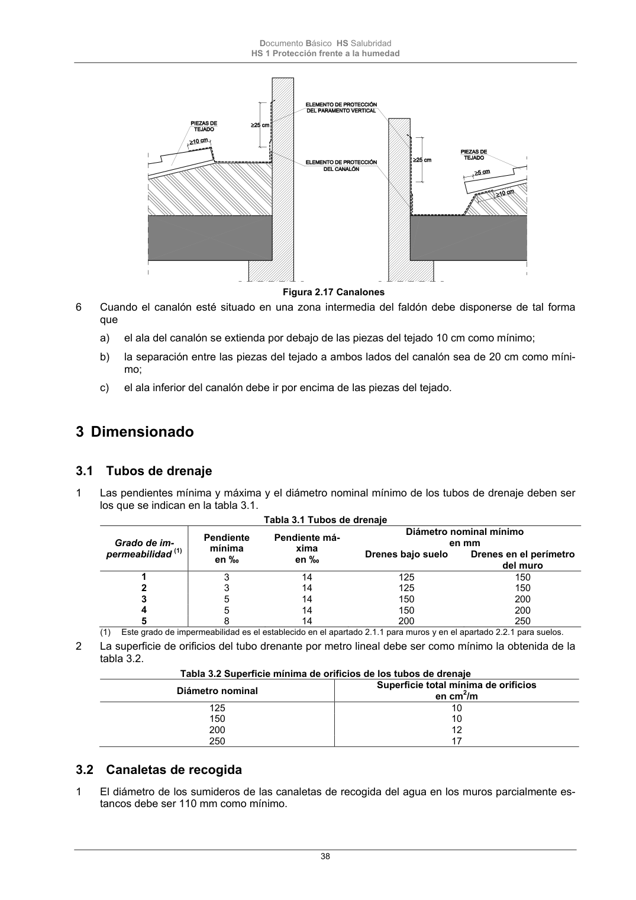

DB-HS Salubridad · edición 2022-06-14 · capa oficial
Documento DB-HS-oficial · SHA-256 del PDF 68df3caacc95f71aee2ec1ba7b2c65ae66155c21e3a8785521b8fdd4fd640d3b
Copia fiel del PDF fuente · Fuente oficial
Ficha de la disposición en la fuente oficial
Formatos: JSON del segmento · Markdown
3.2 Canaletas de recogida 1 El diámetro de los sumideros de las canaletas de recogida del agua en los muros parcialmente es- tancos debe ser 110 mm como mínimo. Documento Básico HS Salubridad HS 1 Protección frente a la humedad 39 2 Las pendientes mínima y máxima de la canaleta y el número mínimo de sumideros en función del grado de impermeabilidad exigido al muro deben ser los que se indican en la tabla 3.3. Tabla 3.3 Canaletas de recogida de agua filtrada Grado de impermea- bilidad del muro Pendiente mínima en % Pendiente máxima en % Sumideros 1 5 14 1 cada 25 m2 de muro 2 5 14 1 cada 25 m2 de muro 3 8 14 1 cada 20 m2 de muro 4 8 14 1 cada 20 m2 de muro 5 12 14 1 cada 15 m2 de muro
